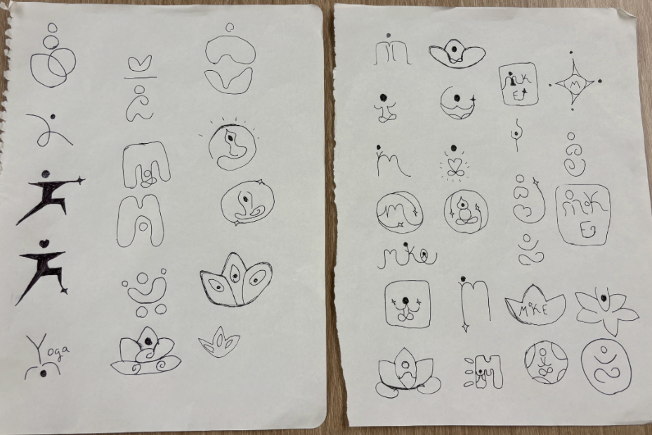
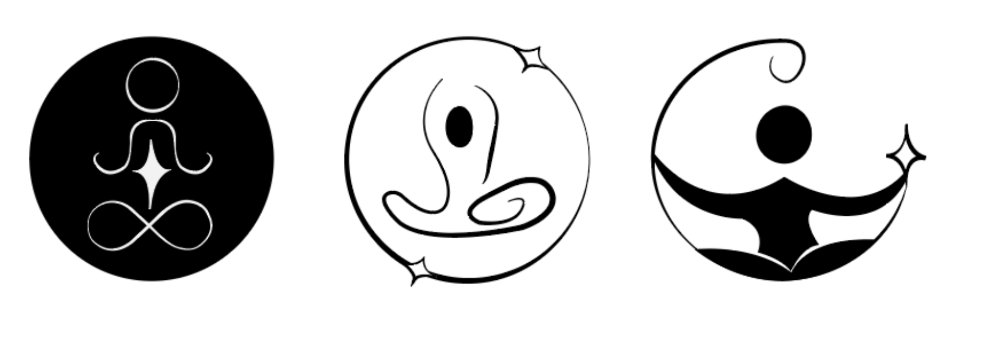

Design Process
The design process began with research, moodboards, and sketches to better understand the direction I wanted to go in with the Milwaukee Yoga Social rebrand. This process was iterative, with multiple rounds of sketching and refining concepts before landing on the final design direction.
Key Stages
- Research
- Moodboards
- Sketches
- Refining concepts into clean designs
Sketch Development
Early sketches explored abstract figures, fluid lines, and circular shapes to represent unity and flow. These sketches helped develop a visual concept that felt calming, social, and connected to the yoga.

Concept Refinement
After experimenting with several directions, the strongest concepts were simplified and used for digital roughs.
Digital Roughs
After sketching, selected concepts were brought into a digital format.
